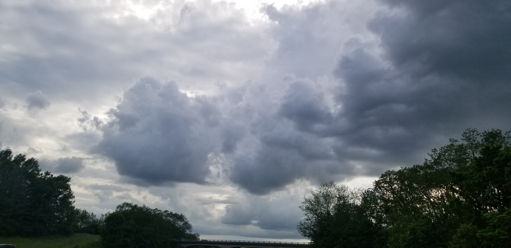

There is what appears to be an angel in one of the images in the gallery. Can you figure out which one it is? The picture was actually taken in Louisville, Ky while on my way to work one morning. It wasn't until looking at the photograph later and someone pointing it out, there is definitely a face looking down on us! Enjoy!